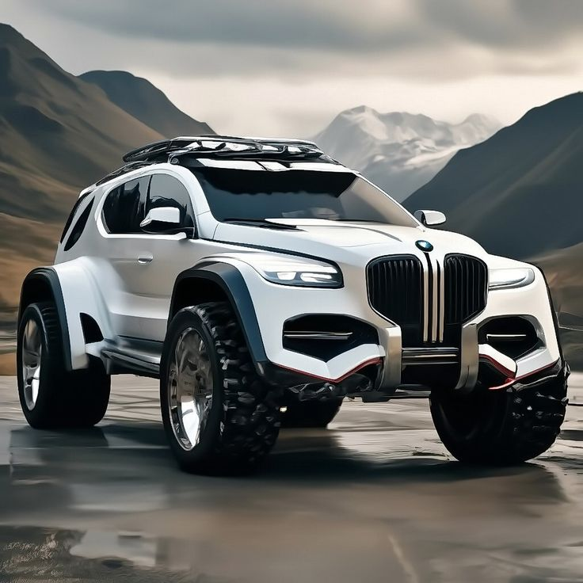

EGP 1,349,000
Geely Coolray 2024 1.5TD
Comfort GC With a fuel economy
of liters per every hundred
kilometers the Geely
Coolray 1.5TD
Comfort GC is a good
option for those who are
in the market for buying
a New Car in EGYPT.

EGP 1,434,000
Geely Coolray 2024 1.5TD
Luxury GF+ (BR)
One of the 2 versions
available you can find
in the EGYPT for the all-new
Geely Coolray that
competes with GAC GS4 and has
a starting

TBD
BYD Atto 3 2024 60.5
kWh
This New BYD Atto
3 60.5 kWh is one
of the 1 versions
available you can find
in the EGYPT. Has a top
speedof KM/h and
seats 5 people.

EGP 879,990
Chevrolet Captiva
2024 1.5T LS
One of the 4 versions
available you can
find in the EGYPT for
the all-new Chevrolet
Captiva that competes with
Mitsubishi Eclipse Cross

EGP 949,990
Chevrolet Captiva 2024
1.5T Premier
One of the 4 versions
available you can find
in the EGYPT for the all-new
Chevrolet Captiva
that competes with GAC GS4.

EGP 980,000
Changan CS35 Plus 2024
1.4T GDI Smart
With a fuel economy of
liters per every
hundred kilometers the
Changan CS35 Plus
1.4T GDI Smart is a good
option for those
who are in the market for
buying a New Car
in EGYPT.